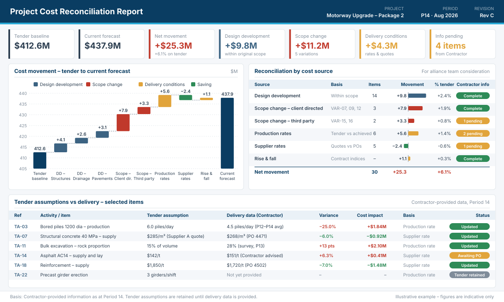
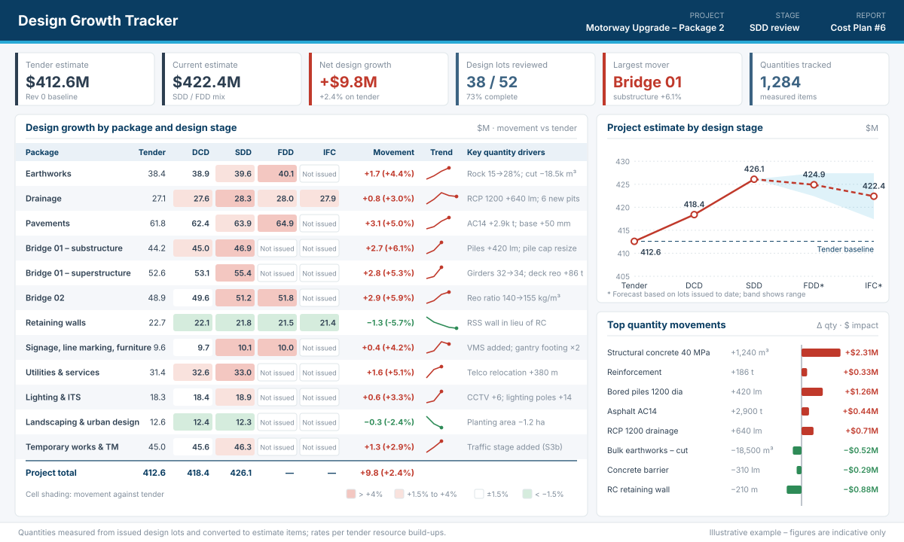
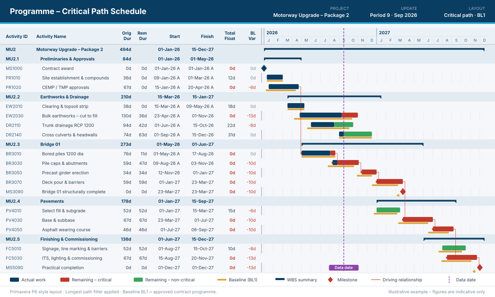
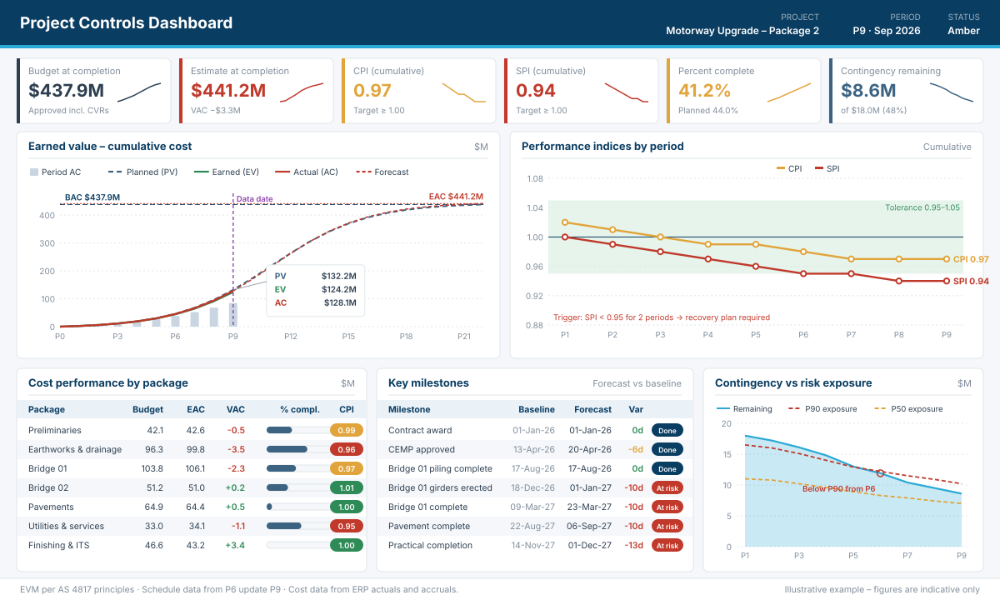
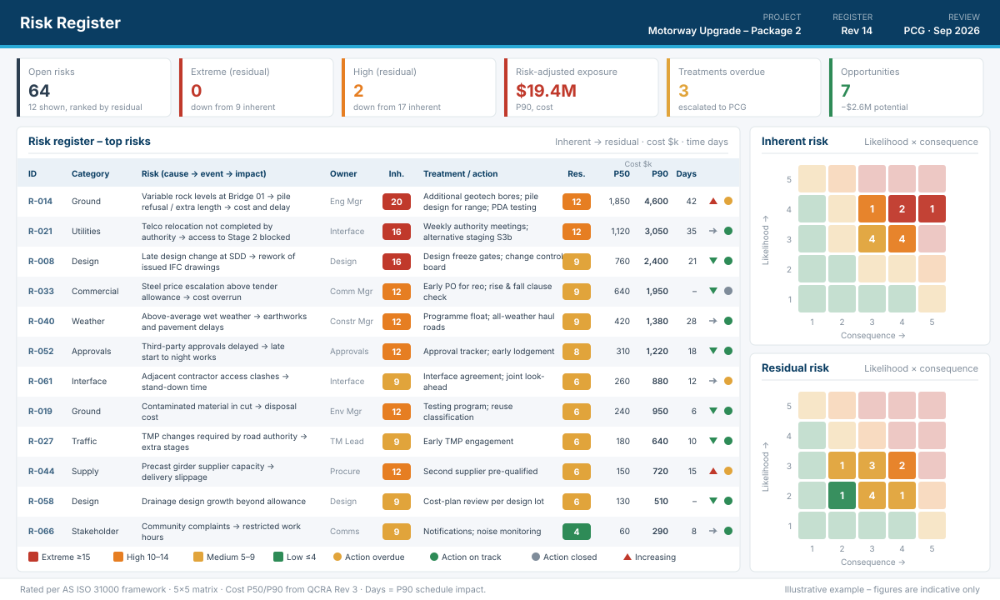
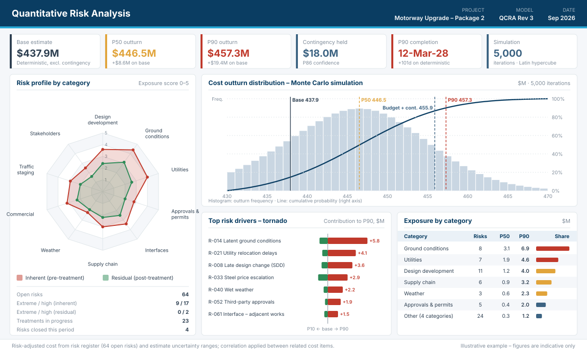

Comprehensive project management and cost planning solutions for civil infrastructure
Tech Aid Consultants delivers cost, commercial and project control services for civil infrastructure projects in Australia and overseas.
For alliance and collaborative contracts. Cost verifiers confirm that actual costs are valid project costs. TAC complements this by tracking how costs move against the tender scope and assumptions, and separating that movement by source for the alliance team to consider, including in pain/gain share discussions.

The tender estimate set up in advanced analytical workbooks, data models, or interactive dashboards with quantities, rates, resources and key assumptions linked.
The cost of design creep, scope creep or variations identified by the Contractor, separated from normal design development.
Tender production rates and supplier quotes are carried until the Contractor provides delivery information, then the estimate is updated and the difference reported.
Regular reporting of cost movement by source: design development, scope change and delivery conditions.
Tracking design growth from the tender through each design stage, so cost movement is visible as the design develops.

TAC provides comprehensive cost planning services from tender stage through all design development phases, including quantity surveying, tender validation, and design development tracking.
Providing accurate cost modelling and feasibility analysis for project options, value engineering, lifecycle costing, and budget development.
Support for planning, controlling and reporting on project delivery, from scope and procurement through to schedule management.


Full-scale project management services covering scope management, procurement, financial control, schedule development, and stakeholder reporting.
Comprehensive scheduling services using Primavera P6 for planning, progress tracking, risk-based scheduling, and delay analysis.
Implementation and management of project systems, dashboards, process optimization, and reporting frameworks for efficient project delivery.
Commercial support across head contracts, subcontract packages, variations and project risk.


Expertise in preparing and administering commercial contracts, managing subcontractor packages, claims, and variation tracking.
Comprehensive risk register development, value management workshops, contingency analysis, and opportunity realization strategies.
Contact us today to discuss how TAC can support your project's success.
Get in Touch